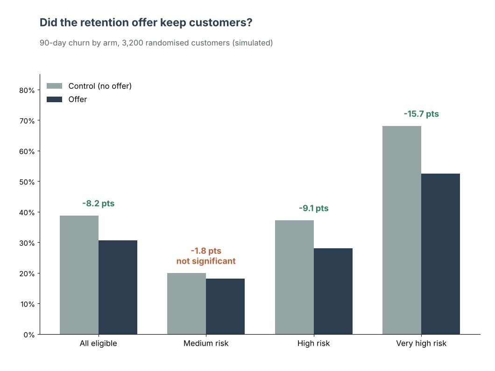

Data science and Power BI
Retention offer A/B test

A randomised experiment testing whether a retention offer keeps high-risk bank customers, run end to end: a plan written in advance, a power calculation, randomisation checks, significance tests with confidence intervals, a guardrail and a decision memo. The Power BI report calculates the statistics in DAX, so every slicer re-runs the test.
- The offer cut 90-day churn by 8.2 points (95% CI 4.9 to 11.4), keeping about 21% of would-be leavers
- Targeting High and Very high risk customers only: €21.5K per 1,000 eligible customers vs €15.8K for offering everyone
- Shows why not to peek: checking weekly would raise false positives from 5% to 12%